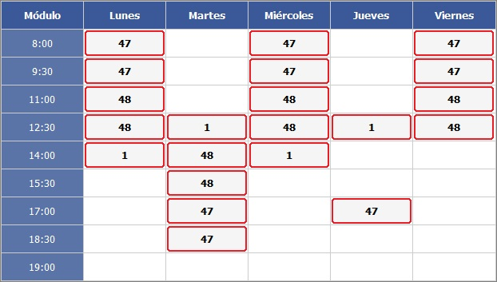
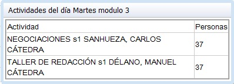
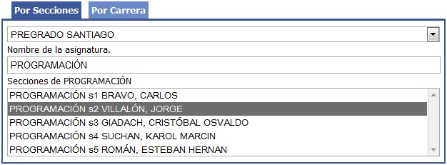
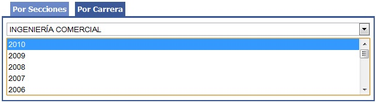
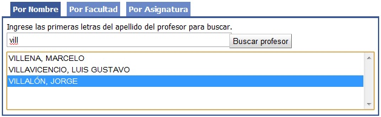
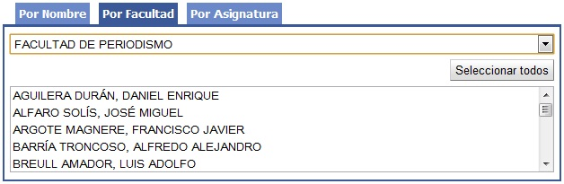
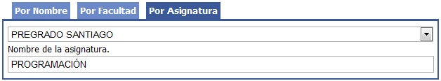
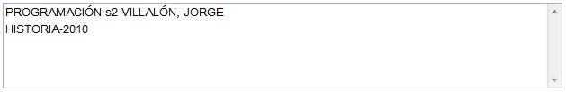

|
||||
Bienvenido al sistema de horarios UAI
Revise rápidamente el horario disponible de profesores y alumnos.Para comenzar ingrese con su correo UAI en la barra superior. Revise rápidamente el horario disponible de profesores y alumnos.Este calendario le permite ver en qué días y módulos hay horarios disponibles para las personas que usted seleccionó. La tabla le mostrará en blanco los bloques disponibles y con borde rojo los bloques ocupados, indicando cuántas personas tienen alguna actividad en ese bloque. Haciendo click en un bloque ocupado podrá revisar las actividades agendadas para esas personas. Busque alumnosPor la asignatura que cursan. Por ejemplo todos los alumnos que están en la sección 2 de Programación. Por carrera y año de ingreso (cohorte). Busque profesoresPor apellido. Por facultad. Por la asignatura que dictan Combine criterios de búsquedaAl buscar alumnos usted puede combinar criterios de búsqueda, por ejemplo todos los alumnos de las sección 2 de Programación y todos los alumnos de Historia ingreso 2010. Filtre por tipo de actividadPor defecto el sistema busca todas las actividades para los alumnos, pero solamente las cátedras para los profesores. Sin embargo ustede puede modificar este filtro haciendo click en Tipo de actividad. ¿Sugerencias? ¿Algo falló?Por favor de un aviso enviando un correo al autor. |
||||
| Copyright (c) 2010 - Jorge Villalón | ||||